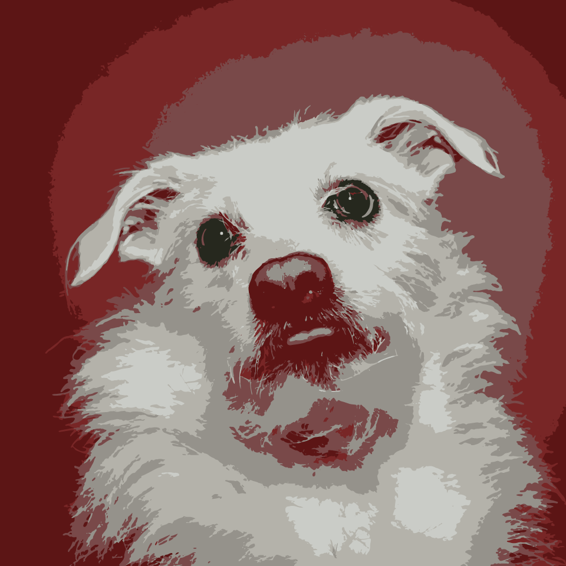
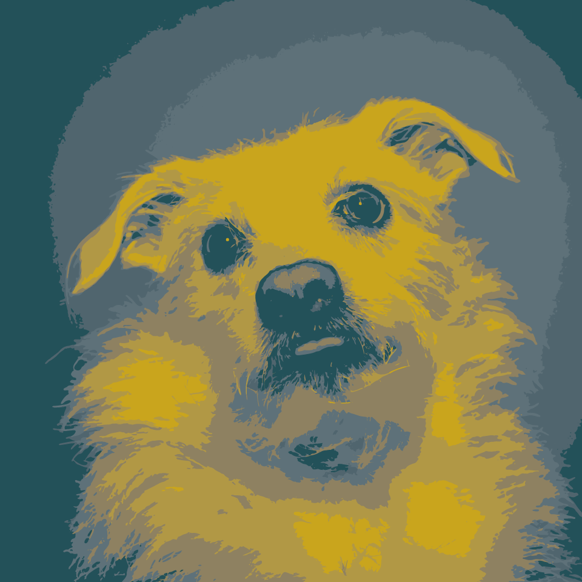

Vector Projects
Home
|
Animation
|
Audio
|
Raster
|
Vector
|
Video
Cartoon Caricature Portraiture
(11 October 2019)
Using the pen tool to make a simple but effective avatar for a profile picture
Canine Image Traces
(28 October 2019)
Exploration of the image trace tool to make art resembling that of pop-art

